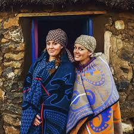
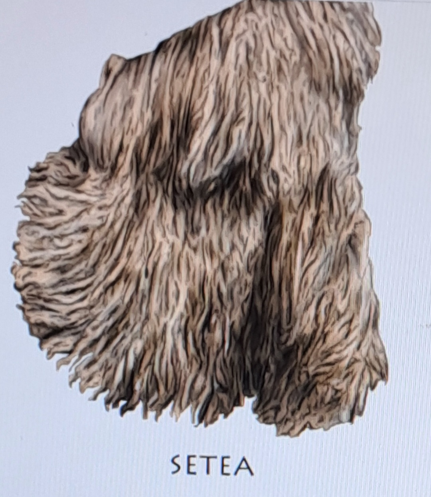

LESIRA
Traditional Basotho blanket worn by chiefs.
More Info
MOHOLOBELA
A blanket worn by young men, symbolizing maturity.
More Info
SESHOESHOE
Traditional Basotho cotton fabric with patterns, worn at cultural events.
More Info
TUKU
Headscarf tied in various styles, denoting respect and marital status.

More Info
MOKOROTLO
Made of grasses, symbolizing Basotho identity.

More Info
SEFATLA
Leather shoes with laces worn by men.

More Info
KUOANE
Traditional hat made from animal hide, symbolizing warriors.
SEBETO
Traditional attire, including skirts and accessories.

More Info
THETHANE
Beaded skirt symbolizing innocence and readiness for marriage.

More Info
SETEA
Traditional garment, cowhide or goatskin skirt.

More Info
KHOLOKOANE
Traditional item of uncolonized Basotho regalia.

More Info
MOLIANYEOE
Judge's attire, meaning "he who executes judgment".

More Info
LESIRA
Traditional attire, detailed image.

More info
MOSE OA KHOMO
Traditional cowhide dress worn by women.
More Info
TSHEA
Traditional loincloth for boys during initiation.
More Info
KOBO E THOKOA
Blanket symbolizing secret lovers.
More Info
LEKHOKOLO
Traditional blanket symbolizing maturity.

More Info
T'SET'SE
Traditional womens hat made of grass.
More Info
LETLAMA
Blanket or matlama, symbolizes status.
More Info
LEFITORI
Traditional blanket, symbolizes transition.
More Info
BALACLAVAS (Kopa head)
Traditional headgear for boys/men.
More info
MEQHATATSO
iIs a Basotho traditional shoe made with animal skin.
More info
MALAKABE
Is a Basotho traditional blanket worn by men.It symbolizes Basotho culture.

More info
KAROSS
Is a Basotho traditional garment made from animal skins,with hair left on,originally worn by indigenous people.

More info
KHOHLOPO(gumboots)
Is a Basotho shoe mostly worn by men when going to (naheng)

More info
KHARETSA>
Is a Basotho traditional blanket,named after the spiral aloe which is only found in the maluti Mountains of Lesotho.

More info
GOAT SKIN(Thethana)
Is a Basotho traditional dress made from goat skin,worn by girls during initiation ceremony.

More info
SEKHOKOLO
Is a Basotho_blanket worn by men.

More info
Mose oa lekoko(animal skin dress)
Is Basotho traditional dress worn by women.It is made from animal skin.

More Info
KATIBA EA MAKOLOANE
Is a Basotho traditional hat worn by men during initiation

More info
MOKHAHLA
Is a Basotho blanket worn by Basotho boys at initiation school

More info
MOSETLA
A Basotho traditional hat worn by women.It symbolizes Basotho culture and image.Is made by grass.
More info
Bale
Bale refers to the initiation(lebollo la Basali)ceremony for girls,which marks their transition to womanhood by teaching them the responsibilities of maarriage and domestic life.

More info